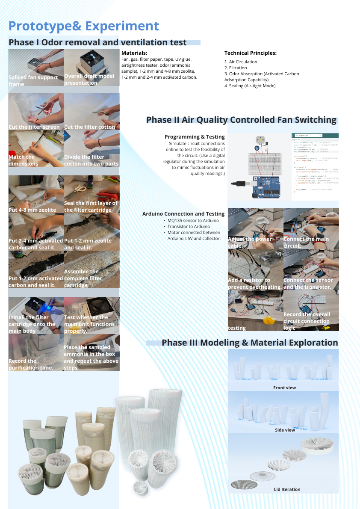

Intro
Coralline is a smart purifier concept that combines physical computing, sensing, and sustainability thinking. Inspired by coral form and environmental cycles, the project explores how a hardware object can integrate air purification, planting, and long-term care.
Deliverables:
Physical Computing
Arduino Prototype
Smart Sensing
Bio-inspired Design
Sustainability Strategy
Year / 2024
Project / Coralline
Type / Product Concept

See also